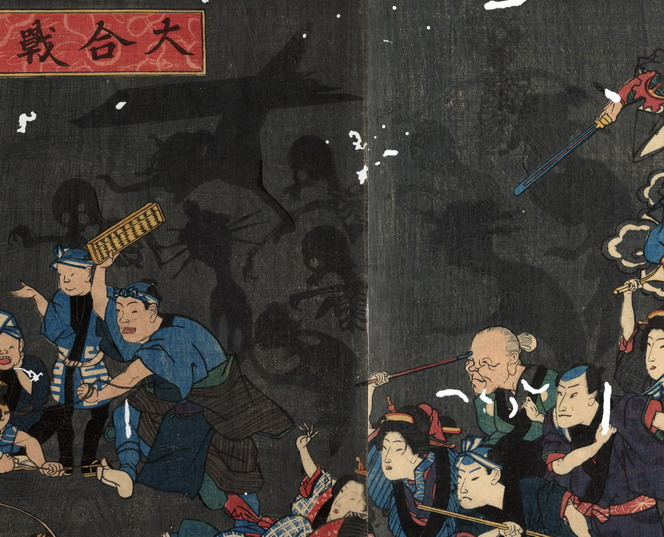

亡者たちの姿が黒い影で描かれている。頭部と上半身の骸骨と、髪に複数の簪を挿した遊女の亡者の姿が見える。遊女の亡者の中には、上からぶら下がり逆さまになっている者もいる。
出典：親書誌：U426_nichibunken_0184：大合戦図；ダイカッセンズ／日付：2010／資源識別子：U426_nichibunken_0184_0003_0000
Copyright (c)2010- International Research Center for Japanese Studies, Kyoto, Japan. All rights reserved.